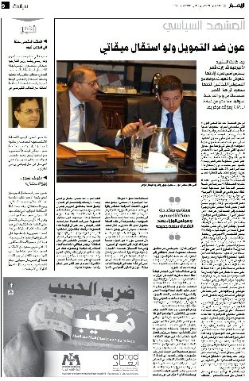

|
|
کمپین بین المللی حقوق بشر با شعار "ضرب و شتم...شرم آور است"
سه شنبه8 آذر 1390
گروه بین المللی خدمات پزشکی با همکاری مرکز اطلاعات و منابع برای برابری جنسیتی "آباد" [1] 16روز را به عنوان روزهای مبارزه با خشونت علیه زنان به امید پایان بخشیدن به این خشونت ها در سراسر جهان نام گذاری کرده اند. امسال در این روزها ما بر این باوریم که پیام ما نه تنها باید حامل پیام صلح و الهام بخش برای این مبارزات باشد بلکه ما باید بازتابی باشیم برای تحولات اخیر اجتماعی جوانان. پیام ما سرشار است از دعوت برای پایان بخشیدن به خشونت و رسیدن به برابری های جنسیتی.
مردان و زنان جهت مبارزه با خشونت علیه زنان با شعار" ضرب و شتم...شرم آور است" در قالب این کمپین بین المللی باهم متحد شده اند. این کمپین در حقیقت توجه ما را به اصل و ریشه باورهای مان جل می کند و به ما تلنگر می زند که چگونه است در دنیای مدرن با داشتن کشوری متمدن هنوز به این خواسته نرسیده ایم؟
در طول این 16 روز با یادآوری این اصل فراموش شده می خواهیم ماهیت واقعی خشونت علیه زنان و زشتی آن را بیش از پیش آشکار سازیم.
اخیراً هشت مرد جوان لبنانی و عراقی کارگاه آموزشی در زمینه مبارزه با خشونت علیه زنان را به پایان رسانده اند. در طول این کارگاه آنها با مفاهیم ساخت یک فیلم آشنا گردیدند. همچنین با مفاهیمی نظیر نقش های جنسیتی، برابری های جنسیتی و چگونگی تعامل مردان جهت پایان دادن به خشونت علیه زنان آشنا شدند. از همه مهم تر، آنها یاد گرفتند که چگونه می توانند با رسانه ای مانند سینما و فیلم ساختن خشونت علیه زنان را بی پرده و تأثیرگذار به نمایش بگذارند.
این هشت مرد جوان با ساخت فیلم های کوتاهی پیام خود که " همه ما در پایان بخشیدن به خشونت علیه زنان نقش مهمی را ایفا می نمائیم" را به زنان و مردان دیگر رسانده اند. هر کدام از این فیلم های کوتاه در حقیقت فراخوانی ست به مردان جهت پایان بخشیدن به خشونت علیه زنان
نمونه هایی از این فیلم ها با پیام "ضرب و شتم شرم آور است" در لینک های زیر قابل مشاهده می باشند:
سیلی
لباس
همسایه ها
زنان کتک خورده
در طول این 16 روز این تیزرهای تلویزیونی از شبکه های مختلف لبنان پخش خواهد شد. از دیگر فعالیت های این کمپین در این 16 روز می توان به نصب صدها بیل برد تبلیغاتی، پخش هزاران آگهی های هشدار دهنده و آگاهی بخش در سطح شهر، استفاده از رسانه های جمعی و تبلیغات و پیام های آن لاین نام برد.

علاوه بر اقدامات یاد شده، نیکلاس ال اوستا[2] ترانه ای را با عنوان" او هنوز هم تحقیر می شود" به همراه کلیپ تهیه شده به کارگردانی ژرژ ال چیداک[3] را به کمپین مبارزاتی ما اهدا کرده است. این ترانه می تواند به نقش رسانه ها و هنر در مبارزه با خشونت و نه گفتن به آن تأکید نماید.
برای تعهد به پایان دادن خشونت علیه زنان بیانیه زیر را امضاء کنید:
«من تعهد می دهم مرتکب خشونت علیه زنان، چشم پوشی یا سکوت رد مقابل آن نباشم»
منبع: کمپین ملی، اطلاعیه مطبوعاتی \"ضرب و شتم ... شرم آور است"